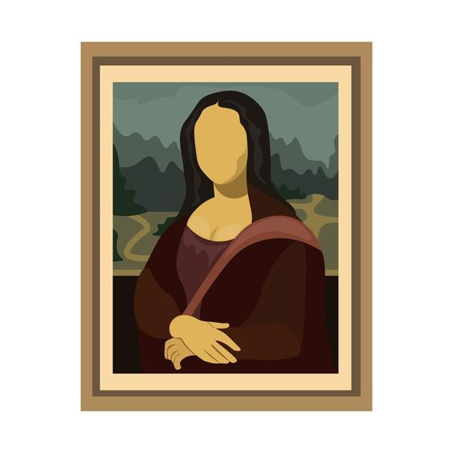
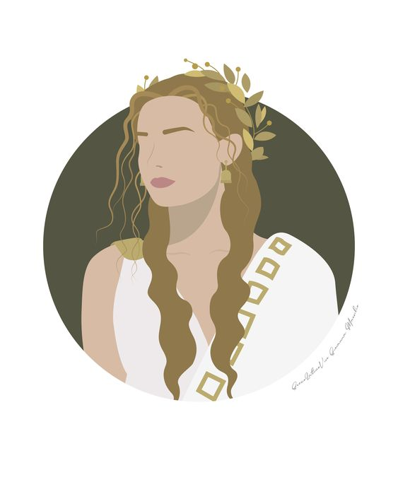

Reportagem
"Exploração infantil através da internete e fora dela e suas punições são assuntos tratados mas pouco
levados a serio no mundo moderno, veja agora a opnião publica e entenda o que fazer quando ver um caso
acontecedo!"
Produção Visual

"Obra 'Os Operários' reacende discussão sobre condições de trabalho na sociedade contemporânea e a turma
1B-T faz releitura da mesma!"
Foodtech Sustentável
"FoodTech sustentável revoluciona a indústria alimentícia: Alimentação do futuro é saborosa, saudável e
amiga do meio ambiente!"
Procura-se emprego
"A dificuldade para arrumar emprego aumenta se não temos força de vontade e não sabemos sobre nossas
próprias habilidades. Veja agora um exemplo de um trabalho que está procurando empregadores."
Coluna de opinião

"Desenvolvendo um pouco por trás dos medicos atuais, mostramos a importancia dos curandeiros através da
historia, veja agora!"
Poemas

"Produções textuais produzidas pelos alunos da 1B-Tarde trazem reflexões e discussões profundas. O que é a vida?"